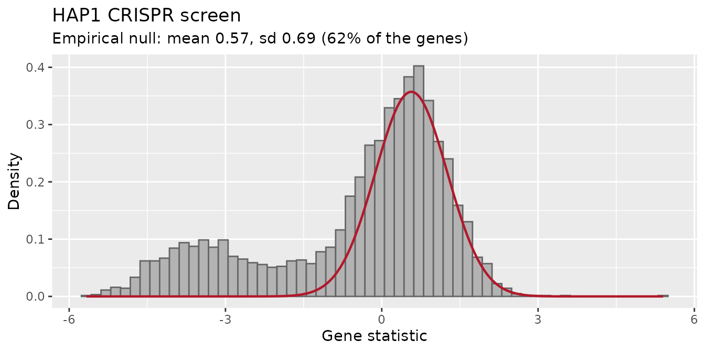
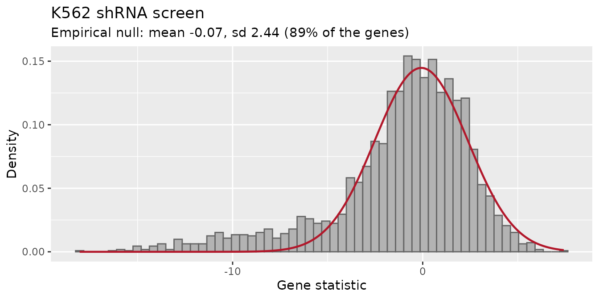

Choosing the reference of the gene-level test
Emanuel Michele Soda
Istituto Europeo Oncologia (IEO), Milano, Italyemanuelsoda@gmail.com
Elena Ceccacci
Istituto Europeo Oncologia (IEO), Milano, Italyelena.ceccacci@ieo.it
2026-10-17
Source:vignettes/Empirical_null.Rmd
Empirical_null.RmdIn short
find_gene_zscore_hit() decides whether a gene is a hit
by comparing its score with a reference: what the score
of a gene without effect looks like. Two references are available:
-
reference = "random"(the default): random sets of barcodes, drawn from all the barcodes or from those ofcontrol_genes; -
reference = "empirical": an empirical null, the distribution of the scores of the genes without effect estimated from the data.
We suggest reference = "empirical" for
libraries with hundreds of genes or more, most of them without effect,
which is the case of genome-wide and of most focused screens:
find_gene_zscore_hit(table, reference = "empirical")The random barcodes have two problems, shown below with the screens
distributed with ScreenR: in dropout screens the hits make them
conservative (many hits are missed), and in shRNA screens they give
p-values that are too small (genes without effect are called). The
empirical null has neither problem. The default is still
"random", so that the results of existing analyses do not
change.
| Your screen | Suggested call |
|---|---|
| CRISPR knockout, dropout or positive selection | reference = "empirical", empirical_fit = "one-sided" |
| shRNA, or when unsure |
reference = "empirical"
(empirical_fit = "central", the default) |
| Small library (fewer than a few hundred genes), or most genes with an effect |
reference = "random", ideally with
control_genes checked against known non-essential
genes |
Always look at plot_empirical_null() (see Checking the fit).
How the gene-level test works
Each gene gets a score, the mean of the Z-scores of its barcodes (see Tutorial 3). A hit is a gene whose score is more extreme than the scores of genes without effect, so the test needs to know how those scores are distributed.
With the random barcodes, the score of a gene of k barcodes is compared with the scores of many random sets of k barcodes. This assumes that the barcodes of a gene without effect behave like barcodes taken at random from the reference.
With the empirical null, the score of each gene is standardized into a statistic (centred on the median of all the barcode scores and divided by their median absolute deviation over ). Most genes have no effect, so the centre of the distribution of these statistics is made of genes without effect: a normal distribution is fitted there, and the p-value of each gene comes from it. The hits, in the tail, are left out of the fit. Two fits are available:
-
empirical_fit = "central"(default): a parabola is fitted to the log density of the statistics around its mode (central matching, as in Efron’slocfdr); -
empirical_fit = "one-sided": the centre is the mode and the spread is estimated only on the side without hits (above the mode for depleted genes, below it withdirection = "Up").
Two screens with known answers
The core essential and non-essential genes of Hart et al. give the
answer: essential genes should be hits, non-essential genes should not.
Half of the non-essential genes are used as control_genes
(the best possible reference, when such genes are known); the other half
is kept out of every reference, to count the false calls.
data(hart_reference_genes)
essential <- hart_reference_genes$Gene[
hart_reference_genes$Class == "core essential"]
nonessential <- hart_reference_genes$Gene[
hart_reference_genes$Class == "non-essential"]
set.seed(2017)
reference <- sample(nonessential, length(nonessential) %/% 2)
held_out <- setdiff(nonessential, reference)
evaluate <- function(result) {
called <- result$Gene[result$FDR <= 0.05]
tested_null <- result$Gene %in% held_out
data.frame(
Called = length(called),
`Essential found` = mean(essential[essential %in% result$Gene]
%in% called),
`NE called` = sum(called %in% held_out),
`NE p <= 0.05` = mean(result$PValue[tested_null] <= 0.05),
check.names = FALSE
)
}The columns of the tables below are the number of genes called at 5%
FDR (Called), the share of the core essential genes among
them (Essential found), the number of held-out
non-essential genes called (NE called) and the share of
held-out non-essential genes with a p-value below 0.05
(NE p <= 0.05). The last one is the check of the
p-values: these genes have no effect, so about 5% of them should have a
p-value below 0.05. Much less means a conservative test (hits are
missed), much more means p-values that are too small (genes without
effect are called).
A CRISPR dropout screen: the random barcodes miss hits
hap1_count_table is a CRISPR-Cas9 screen of HAP1 cells
(TKOv3 library), compared here at day 18 against T0, as in Tutorial 4:
data(hap1_count_table)
data(hap1_annotation_table)
samples <- data.frame(
Sample = colnames(hap1_count_table)[-1], Day = "Screen",
Treatment = c("T0", "T3", "T3", "T3", "T18", "T18", "T18")
)
hap1 <- create_screenr_object(
table = hap1_count_table, annotation = hap1_annotation_table,
groups = factor(samples$Treatment, levels = c("T0", "T3", "T18")),
sample_table = samples
)
hap1 <- compute_data_table(normalize_data(remove_all_zero_row(hap1)))
design <- create_design_matrix(hap1)
contrast <- create_contrast(design, treatment = "T18", control = "T0")
hap1_statistics <- compute_barcode_statistics(hap1, design, contrast)
hap1_results <- list(
`Random, all barcodes (default)` = find_gene_zscore_hit(
hap1_statistics, fdr = 1, n_permutations = 2e4, seed = 1),
`Random, non-essential controls` = find_gene_zscore_hit(
hap1_statistics, control_genes = reference, fdr = 1,
n_permutations = 2e4, seed = 1),
`Empirical, central` = find_gene_zscore_hit(
hap1_statistics, reference = "empirical", fdr = 1),
`Empirical, one-sided` = find_gene_zscore_hit(
hap1_statistics, reference = "empirical",
empirical_fit = "one-sided", fdr = 1)
)
knitr::kable(bind_rows(lapply(hap1_results, evaluate), .id = "Reference"),
digits = 3)| Reference | Called | Essential found | NE called | NE p <= 0.05 |
|---|---|---|---|---|
| Random, all barcodes (default) | 332 | 0.457 | 0 | 0.000 |
| Random, non-essential controls | 917 | 0.986 | 5 | 0.048 |
| Empirical, central | 798 | 0.949 | 3 | 0.013 |
| Empirical, one-sided | 932 | 0.986 | 7 | 0.051 |
With the default reference only a minority of the core essential
genes is found, and not a single held-out non-essential gene has a
p-value below 0.05: the test is far too conservative. The reason is that
the random barcodes are drawn from all the genes, and in a dropout
screen many of them are hits. Their depleted barcodes widen the
reference, so a gene must be very depleted to stand out from it. The
empirical null is fitted where the genes without effect are and is not
widened by the hits: it finds about as many essential genes as the
non-essential controls, without needing them, and with no more false
positives than expected ("one-sided" close to the nominal
5%, "central" somewhat conservative).
An shRNA screen: the random barcodes call genes without effect
k562_count_table is an shRNA screen of K562 cells,
compared at day 14 against the plasmid. Each gene has about 20
shRNAs.
data(k562_count_table)
data(k562_annotation_table)
data(k562_reference_genes)
k562 <- create_screenr_object(
table = k562_count_table, annotation = k562_annotation_table,
groups = factor(c("Plasmid", "T14", "T14")),
sample_table = data.frame(
Sample = c("Plasmid", "T14_A", "T14_B"),
Day = "Screen", Treatment = c("Plasmid", "T14", "T14")
)
)
k562 <- compute_data_table(normalize_data(k562))
k562_metrics <- compute_metrics(k562,
control = "Plasmid", treatment = "T14", day = "Screen"
)The reference genes of this screen are in
k562_reference_genes; as above, half of the non-essential
genes are the controls and half are kept out.
essential <- k562_reference_genes$Gene[
k562_reference_genes$Class == "core essential"]
nonessential <- k562_reference_genes$Gene[
k562_reference_genes$Class != "core essential"]
set.seed(2017)
reference <- sample(nonessential, length(nonessential) %/% 2)
held_out <- setdiff(nonessential, reference)
k562_results <- list(
`Random, all barcodes (default)` = find_gene_zscore_hit(
k562_metrics, fdr = 1, min_barcodes = 1, n_permutations = 2e4,
seed = 1),
`Random, non-essential controls` = find_gene_zscore_hit(
k562_metrics, control_genes = reference, fdr = 1, min_barcodes = 1,
n_permutations = 2e4, seed = 1),
`Empirical, central` = find_gene_zscore_hit(
k562_metrics, reference = "empirical", fdr = 1, min_barcodes = 1),
`Empirical, one-sided` = find_gene_zscore_hit(
k562_metrics, reference = "empirical", empirical_fit = "one-sided",
fdr = 1, min_barcodes = 1)
)
knitr::kable(bind_rows(lapply(k562_results, evaluate), .id = "Reference"),
digits = 3)| Reference | Called | Essential found | NE called | NE p <= 0.05 |
|---|---|---|---|---|
| Random, all barcodes (default) | 384 | 0.488 | 5 | 0.049 |
| Random, non-essential controls | 717 | 0.695 | 57 | 0.195 |
| Empirical, central | 240 | 0.323 | 0 | 0.013 |
| Empirical, one-sided | 203 | 0.273 | 0 | 0.007 |
Here the non-essential controls, the reference that worked best in the CRISPR screen, call dozens of non-essential genes, and far more than 5% of them have a p-value below 0.05. The random barcodes assume that the barcodes of a gene without effect behave like barcodes taken at random. They do not: the shRNAs of a gene share its knockdown efficiency, its expression and its off-target profile, so they tend to move together, and the scores of whole genes vary more than those of random sets of barcodes. This can be measured on the held-out non-essential genes: their standardized statistic would have a standard deviation of 1 if their barcodes behaved like random barcodes.
statistic <- k562_results[["Empirical, central"]]
sd(statistic$Statistic[statistic$Gene %in% held_out])
#> [1] 2.039191It is about twice as large, and with about 20 barcodes per gene this extra variation dominates. The empirical null measures the spread of the gene statistics directly, so it includes it, and keeps the false positives below the nominal rate.
The default reference looks well calibrated on this dataset, but only by chance: its reference is widened by the many essential genes of the subset (26% of the genes are core essential), which hides the problem. With the essential genes as rare as in a genome-wide library it calls genes without effect too (see the benchmark below).
The empirical null finds fewer essential genes here. This is the honest result: with so much variation between genes, the weak shRNAs of many essential genes cannot be told apart from genes without effect. The other references find more only because their p-values are too small.
Checking the fit
plot_empirical_null() shows the gene statistics and the
fitted null. The null (red line) should follow the central peak; the
hits are in the tail on the side of direction:
plot_empirical_null(hap1_statistics, empirical_fit = "one-sided") +
ggtitle("HAP1 CRISPR screen")
plot_empirical_null(k562_metrics, min_barcodes = 1) +
ggtitle("K562 shRNA screen")
The subtitle gives the fitted mean and standard deviation and the share of genes described by the null. Things to look for:
- The null does not follow the central peak, or the peak is not clear: the screen may have too few genes, or too many genes with an effect, for an empirical null. Use the random barcodes with checked control genes.
-
The tail is on the wrong side: check
direction(“Down” for depleted genes, “Up” for enriched genes). - A standard deviation much larger than 1 means that the genes vary more than their barcodes (as in K562): the random barcodes would give too small p-values.
find_gene_zscore_hit() also returns the fitted null as
an attribute:
attr(hap1_results[["Empirical, one-sided"]], "null")
#> mean sd
#> 0.5670556 0.6900248Central or one-sided?
"one-sided" uses only the side of the distribution
without hits, so the hits cannot enter the fit at all: it has the most
power when the hits are well separated from the genes without effect, as
in CRISPR knockout screens. "central" is the safer choice
when hits and genes without effect overlap, as in shRNA screens, where
"one-sided" can be too conservative. In the benchmark below
"central" never gave too small p-values.
Benchmark
The bundled screens are subsets that keep all the reference genes, so
essential genes are much more frequent than in a genome-wide library
(about 4%). The script benchmark/realdata/empirical_null.R
of the GitHub repository repeats the comparison on the complete HAP1
TKOv3 screen (70,797 sgRNAs, 18,056 genes) and on the two subsets with
the essential genes removed at random until they are 5% or 10% of the
genes (mean of three random draws). Essential is the share
of core essential genes in the data; the other columns are as above:
benchmark <- read.csv(system.file("extdata", "benchmark",
"empirical_null.csv", package = "ScreenR"), check.names = FALSE)
benchmark %>%
mutate(Essential = paste0(round(100 * Essential, 1), "%")) %>%
select(Data, Essential, Reference = Method,
`Essential found` = Recall, `NE called`,
`NE p <= 0.05` = `NE p<=0.05`) %>%
knitr::kable(digits = c(0, 0, 0, 3, 1, 3))| Data | Essential | Reference | Essential found | NE called | NE p <= 0.05 |
|---|---|---|---|---|---|
| HAP1 genome-wide | 3.6% | Empirical, central | 0.899 | 1.7 | 0.020 |
| HAP1 genome-wide | 3.6% | Empirical, one-sided | 0.940 | 4.7 | 0.028 |
| HAP1 genome-wide | 3.6% | Random, all barcodes (default) | 0.584 | 0.0 | 0.008 |
| HAP1 genome-wide | 3.6% | Random, non-essential controls | 0.957 | 5.0 | 0.047 |
| HAP1 subset | 5% | Empirical, central | 0.887 | 1.0 | 0.021 |
| HAP1 subset | 5% | Empirical, one-sided | 0.955 | 4.0 | 0.049 |
| HAP1 subset | 5% | Random, all barcodes (default) | 0.608 | 0.0 | 0.005 |
| HAP1 subset | 5% | Random, non-essential controls | 0.955 | 4.0 | 0.054 |
| HAP1 subset | 10% | Empirical, central | 0.907 | 1.0 | 0.021 |
| HAP1 subset | 10% | Empirical, one-sided | 0.956 | 4.0 | 0.049 |
| HAP1 subset | 10% | Random, all barcodes (default) | 0.551 | 0.0 | 0.003 |
| HAP1 subset | 10% | Random, non-essential controls | 0.960 | 4.0 | 0.054 |
| HAP1 subset | 19% | Empirical, central | 0.909 | 1.0 | 0.013 |
| HAP1 subset | 19% | Empirical, one-sided | 0.967 | 5.0 | 0.044 |
| HAP1 subset | 19% | Random, all barcodes (default) | 0.379 | 0.0 | 0.000 |
| HAP1 subset | 19% | Random, non-essential controls | 0.967 | 8.0 | 0.054 |
| K562 | 5% | Empirical, central | 0.303 | 0.0 | 0.037 |
| K562 | 5% | Empirical, one-sided | 0.220 | 0.0 | 0.007 |
| K562 | 5% | Random, all barcodes (default) | 0.577 | 26.3 | 0.131 |
| K562 | 5% | Random, non-essential controls | 0.657 | 50.0 | 0.195 |
| K562 | 10% | Empirical, central | 0.289 | 0.0 | 0.027 |
| K562 | 10% | Empirical, one-sided | 0.220 | 0.0 | 0.007 |
| K562 | 10% | Random, all barcodes (default) | 0.533 | 17.0 | 0.110 |
| K562 | 10% | Random, non-essential controls | 0.667 | 51.0 | 0.195 |
| K562 | 26% | Empirical, central | 0.323 | 0.0 | 0.013 |
| K562 | 26% | Empirical, one-sided | 0.273 | 0.0 | 0.007 |
| K562 | 26% | Random, all barcodes (default) | 0.488 | 5.0 | 0.049 |
| K562 | 26% | Random, non-essential controls | 0.695 | 57.0 | 0.195 |
- In the CRISPR screen the default reference finds 55-61% of the core
essential genes when they are as rare as in a genome-wide library
(including the complete library), and fewer when they are more frequent;
the empirical null finds about 90% (
"central") and 94-97% ("one-sided"), with no more false positives than expected. Only the non-essential controls do as well, and they need reference genes. - In the shRNA screen, with genome-wide proportions of essential genes, the default reference gives 11-13% of non-essential genes with a p-value below 0.05 and calls 17 to 26 of them, and the non-essential controls about 20% and 50. The empirical null stays below 4% and calls none.
When not to use the empirical null
The empirical null needs the genes without effect to be the majority, and enough genes (hundreds) to estimate their distribution. It is not suited to:
- small focused libraries, or the toy dataset of the other tutorials
(
find_gene_zscore_hit()warns when fewer than 100 genes are tested); - screens where most genes have an effect;
- comparisons where the genes without effect are not at the centre, for example when a normalization problem shifts all the genes: check the normalization first (Tutorial 2).
In these cases use the random barcodes, if possible with control genes that were checked against known non-essential genes.
Session info
sessionInfo()
#> R version 4.6.1 (2026-06-24)
#> Platform: x86_64-pc-linux-gnu
#> Running under: Ubuntu 24.04.5 LTS
#>
#> Matrix products: default
#> BLAS: /usr/lib/x86_64-linux-gnu/openblas-pthread/libblas.so.3
#> LAPACK: /usr/lib/x86_64-linux-gnu/openblas-pthread/libopenblasp-r0.3.26.so; LAPACK version 3.12.0
#>
#> locale:
#> [1] LC_CTYPE=C.UTF-8 LC_NUMERIC=C LC_TIME=C.UTF-8
#> [4] LC_COLLATE=C.UTF-8 LC_MONETARY=C.UTF-8 LC_MESSAGES=C.UTF-8
#> [7] LC_PAPER=C.UTF-8 LC_NAME=C LC_ADDRESS=C
#> [10] LC_TELEPHONE=C LC_MEASUREMENT=C.UTF-8 LC_IDENTIFICATION=C
#>
#> time zone: UTC
#> tzcode source: system (glibc)
#>
#> attached base packages:
#> [1] stats graphics grDevices utils datasets methods base
#>
#> other attached packages:
#> [1] ggplot2_4.0.3 dplyr_1.2.1 ScreenR_1.15.16 BiocStyle_2.40.0
#>
#> loaded via a namespace (and not attached):
#> [1] SummarizedExperiment_1.42.0 gtable_0.3.6
#> [3] xfun_0.62 bslib_0.12.0
#> [5] Biobase_2.72.0 lattice_0.22-9
#> [7] vctrs_0.7.3 tools_4.6.1
#> [9] generics_0.1.4 stats4_4.6.1
#> [11] tibble_3.3.1 pkgconfig_2.0.3
#> [13] Matrix_1.7-5 RColorBrewer_1.1-3
#> [15] S7_0.2.2 desc_1.4.3
#> [17] S4Vectors_0.50.3 lifecycle_1.0.5
#> [19] compiler_4.6.1 farver_2.1.2
#> [21] stringr_1.6.0 textshaping_1.0.5
#> [23] statmod_1.5.2 Seqinfo_1.2.0
#> [25] htmltools_0.5.9 sass_0.4.10
#> [27] yaml_2.3.12 pillar_1.11.1
#> [29] pkgdown_2.2.1 jquerylib_0.1.4
#> [31] tidyr_1.3.2 DelayedArray_0.38.2
#> [33] cachem_1.1.0 limma_3.68.5
#> [35] abind_1.4-8 tidyselect_1.2.1
#> [37] locfit_1.5-9.12 digest_0.6.39
#> [39] stringi_1.8.9 purrr_1.2.2
#> [41] bookdown_0.48 labeling_0.4.3
#> [43] fastmap_1.2.0 grid_4.6.1
#> [45] cli_3.6.6 SparseArray_1.12.3
#> [47] magrittr_2.0.5 patchwork_1.3.2
#> [49] S4Arrays_1.12.1 withr_3.0.3
#> [51] edgeR_4.10.6 scales_1.4.0
#> [53] rmarkdown_2.32 XVector_0.52.0
#> [55] matrixStats_1.5.0 otel_0.2.0
#> [57] ragg_1.5.2 evaluate_1.0.5
#> [59] knitr_1.52 GenomicRanges_1.64.0
#> [61] IRanges_2.46.0 rlang_1.3.0
#> [63] glue_1.8.1 BiocManager_1.30.27
#> [65] BiocGenerics_0.58.1 jsonlite_2.0.0
#> [67] R6_2.6.1 MatrixGenerics_1.24.0
#> [69] systemfonts_1.3.2 fs_2.1.0